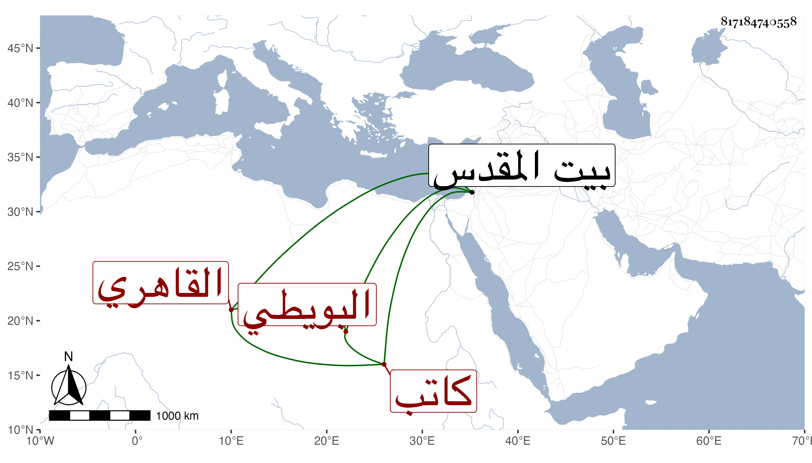

0902Sakhawi.DawLamic.ITO20230111-ara1.EIS1600.817184740558
Biography ID: 817184740558
17
آمنة ابنة علي بن أبي بكر البويطي القاهري كاتب العليق أبوها وأخت المحمدين كريم الدين شقيقها وشمس الدين لابيها ووالدة البدر محمد بن محمد السعدي الماضين ، ماتت في ليلة الجمعة حادي عشر ذي القعدة سنة ثمانين عن ستين سنة وصلى عليها من الغد بعد صلاة الجمعة في جامع الحاكم في مشهد جليل جميل ، ثم دفنت بحوش سعيد السعداء عند أمها وكانت قد حجت وزارت بيت المقدس ، وتزوجت عدة أزواج منهم المعين الطرابلسي الحنفي ولم تكن محظوظة في ذلك مع رياستها وقنعها واتقانها مع كونها تقرأ وتكتب عوضها الله الجنة .
